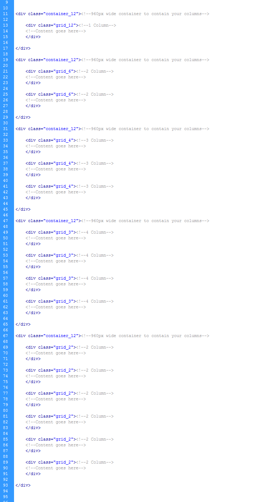
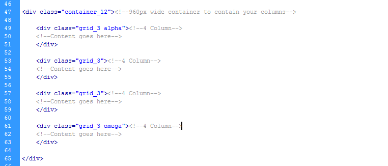
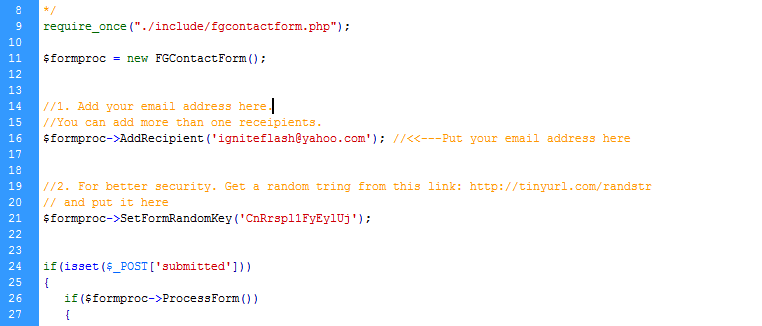
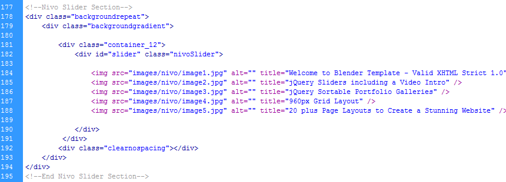
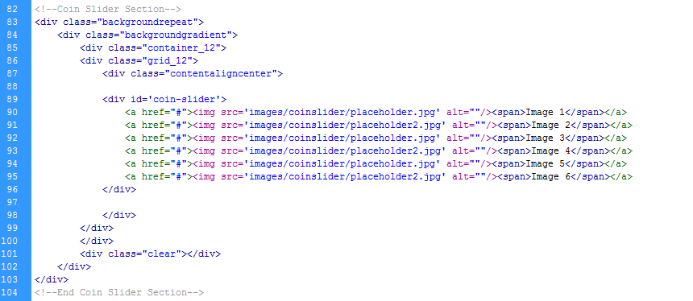
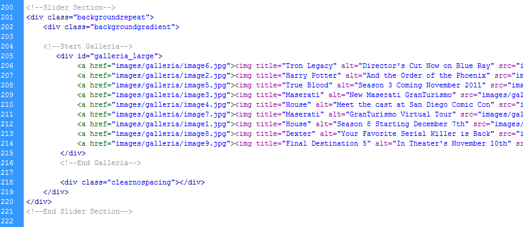
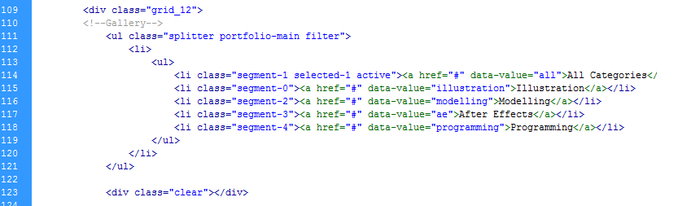
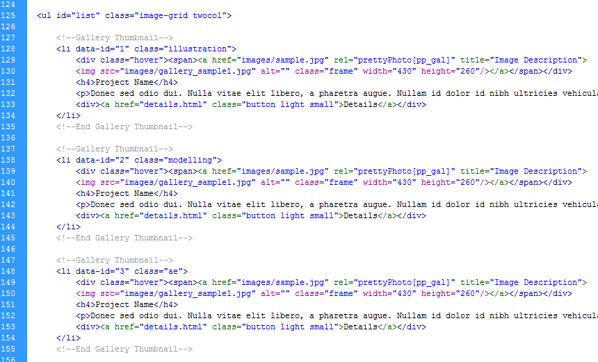

“Blender Template” Documentation by “Igniteflash”
“Blender Valid XHMTL / CSS Template”
 By: Igniteflash
By: Igniteflash
Thank you for purchasing my theme. If you have any questions that are beyond the scope of this help file, please feel free to email via my user page contact form here. Thanks so much!
Table of Contents
- HTML Structure
- CSS Files and Structure
- JavaScript
- PHP Contact Form with jQuery Validation
- Nivo Slider
- Coin Slider
- Galleria Slider
- Piecemaker 2 3D Slider
- Sortable Galleries
- Remove Color Selector
- Sources and Credits
A) HTML Structure - top
This theme is a fixed layout based on the 960 Grid System. You can find more information about the 960 Grid System here. The 960 Grid system is a simple and efficient method for streamlining workflow. By setting a particular grid within your div tags you can set 1, 2, 3, 4, 6 columns for displaying your content. Below is an example of the 960 Grid system at its very basic:
When creating your grid layout often you will want your content to lay flush left and right with no margin. To do this just add the alpha and omega class to your grid class like so:
You can find all the css settings for the 960 grid inside the folder "html/css/grid.css". You probably wont have to modify much inside grid.css but you can if you have to.
B) CSS Files and Structure - top
I'm using several CSS files in this theme.
- reset.css - The first one is a generic reset file. Many browser interpret the default behavior of html elements differently. By using a general reset CSS file, we can work round this. This file also contains some general styling, such as anchor tag colors, font-sizes, etc. Keep in mind, that these values might be overridden somewhere else in the file.
- styles.css - This file contains most of the styles for things such as headers, fonts etc. To find a section simply search for it, ie "footer".
- default.css - This file contains the color scheme. The current default color scheme is blue, to change it simply take one of the other color scheme's such as "green.css", or"red.css" and rename it to "default.css".
- grid.css - This is all the settings for the 960 Grid System.
- nivo-slider.css - Nivo Slider settings. You can learn more about the Nivo Slider here.
- coin-slider-styles.css - Coin Slider Settings. You can learn more about the Coin Slider here.
- prettyPhoto.css - This is for the Pretty Photo lightbox. You can learn more about the Pretty Photo lightbox here.
- contact.css - This is for the contact form styles, seperate from the blog form. The contact.css file is contained inside the folder "html/contact/contact.css"
If you would like to edit a specific section of the site, simply find the appropriate label in the CSS file, and then scroll down until you find the appropriate style that needs to be edited.
C) JavaScript - top
This theme imports several Javascript files.
- jQuery - jQuery is a Javascript library that greatly reduces the amount of code that you must write.
- My Custom Scripts - Some of the animation in this site is carried out from the custom scripts.
- Plugins - In addition to the custom scripts, I implement a few "tried and true" plugins to create the effects. This plugin is packed, so you won't need to manually edit anything in the file. If you wish to customize any of the scripts you can find them in the folder "html/js"
D) PHP Contact Form with jQuery Validation - top
This theme includes a working out of the box Contact form. All the contact form Scripts, CSS and PHP are contained within the folder "html/contact". Just replace the current email address with your email address or multiple email addresses inside "html/contact/contactform.php":
Then upload the entire folder "html/contact" and the file "html/contact.html" to your webserver. Your webserver must support PHP.
E) Nivo Slider - top
Here is an example of the Nivo Slider HTML. This block represents one slide, you can duplicate this code to create more slides. For more detailed information about the Nivo Slider Click Here
F) Coin Slider - top
Here is an example of the Coin Slider HTML. Just add your images within the div id='coin-slider'. For more detailed information about the Coin Slider Click Here
G) Galleria Slider - top
Here is an example of the Galleria Slider HTML. Just add your images within the div id='galleria' or div id='galleria_large'. For more detailed information about the Galleria Slider Click Here
H) Piecemaker 3D Slider - top
Piecemaker 2 is a Flash based 3D slider. You can make all the changes to this Slider in xml, including skinning, size, adding images, video or swf's. The xml is located in "html/piecemaker.xml". For more detailed information about the Piecemaker 2 or to download the source fla Click Here
I) Sortable Galleries - top
This theme includes several Gallery options, 2, 3, 4 and 8 Column Sortable Galleries. Below is an example of the navigation code. You can add more Gallery buttons, just make sure the data-value has the new category name.
Below is an example of the Gallery content. You can add as many thumbnails you like, just duplicate the gallery thumbnail code, but make sure each new thumbnail has a unique data-id value. Also in the class enter the data-value given to the navigation button. You can display images(jpg, png, gif), video(vimeo or youtube) and swf's, just enter the path inside the href="".
J) Remove Color Selector - top
I left the color selector in the pages for your convenience, to remove it open each html page, in code view scroll to the bottom and remove the block of code labeled "Slide Out".
K) Sources and Credits - top
I've used the following images, icons or other files as listed.
- Nivo Slider - Click Here
- Piecemaker 2 3D Slider - Click Here
- Coin Slider - Click Here
- Galleria Slider - Click Here
- Quicksand for the Galleries - Click Here
- Mega Drop Down Navigation - Click Here
- Pretty Photo - Click Here
- Contact Form with jQuery Validation - Click Here
Once again, thank you so much for purchasing this theme. As I said at the beginning, I'd be glad to help you if you have any questions relating to this theme. No guarantees, but I'll do my best to assist. If you have a more general question relating to the themes on ThemeForest, you might consider visiting the forums and asking your question in the "Item Discussion" section.